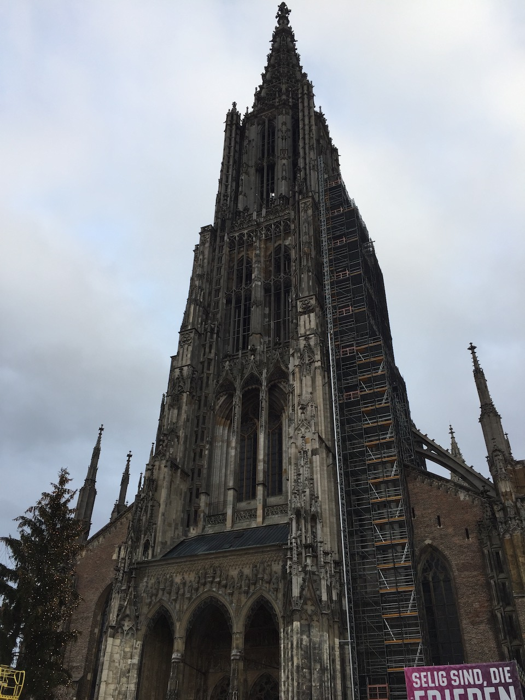
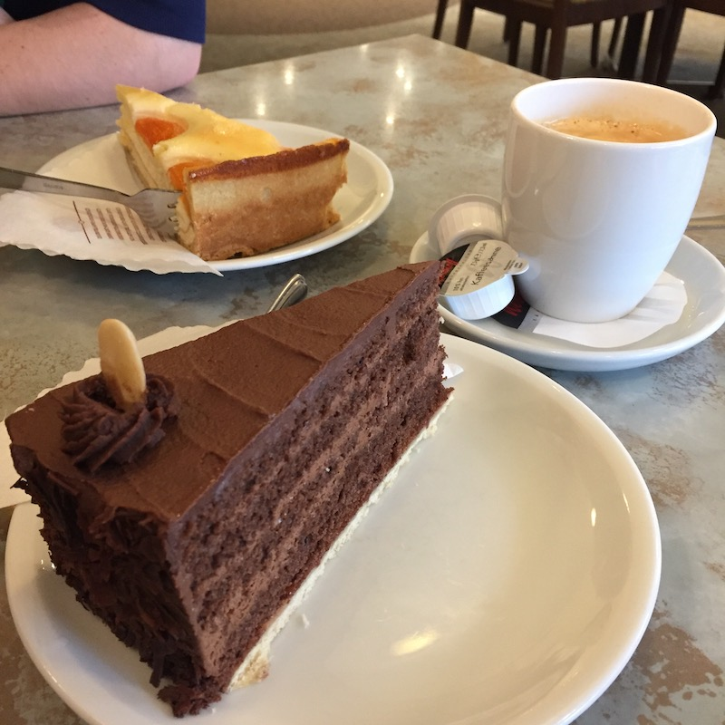
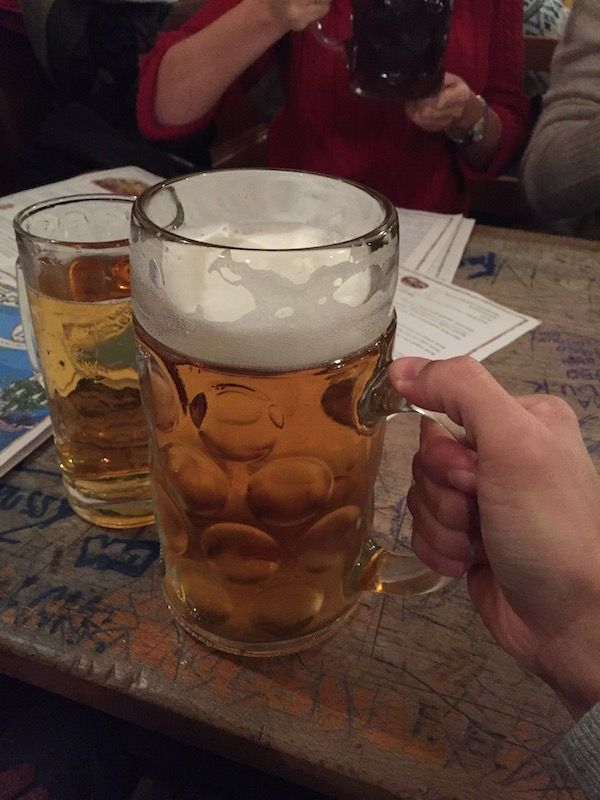
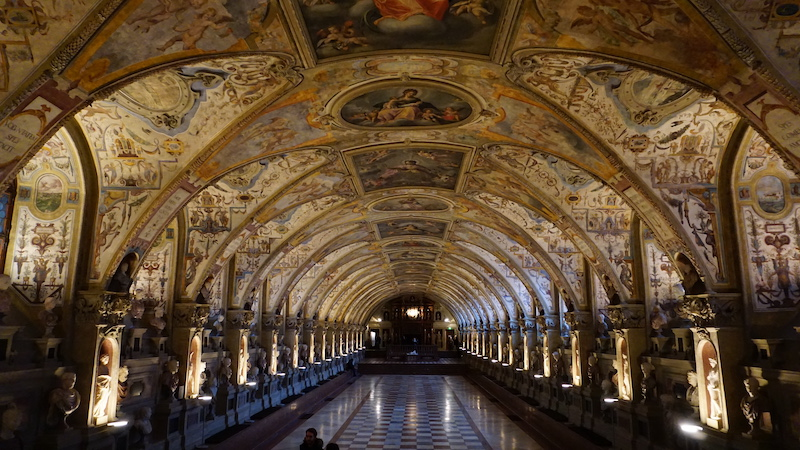
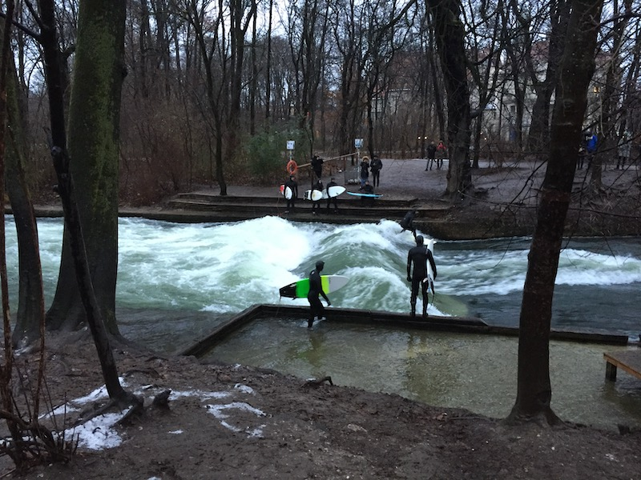

+++
title = "von Ulm nach München"
date = "2022-03-29"
+++

<center style="margin-bottom: 2in">
  <iframe
    src="https://www.google.com/maps/embed?pb=!1m14!1m12!1m3!1d610560.3890674926!2d10.466354426217656!3d48.458545799766384!2m3!1f0!2f0!3f0!3m2!1i1024!2i768!4f13.1!5e0!3m2!1sen!2sca!4v1648565317796!5m2!1sen!2sca"
    width="1000"
    height="600"
    style="border: 0"
    allowfullscreen=""
    loading="lazy"
    referrerpolicy="no-referrer-when-downgrade"
  ></iframe>
</center>

<center style="margin-bottom: 2in">
  
  <p>Ulmer Munster</p>
</center>

<center style="margin-bottom: 2in">
  
</center>

<center style="margin-bottom: 2in">
  
  <p>Hofbräuhaus</p>
</center>

<center style="margin-bottom: 2in">
  
  <p>Residenz München</p>
</center>

<center style="margin-bottom: 2in">
  
  <p>Residenz München</p>
</center>

<center style="margin-bottom: 2in">
  
  <p>Eisbachwelle</p>
</center>
